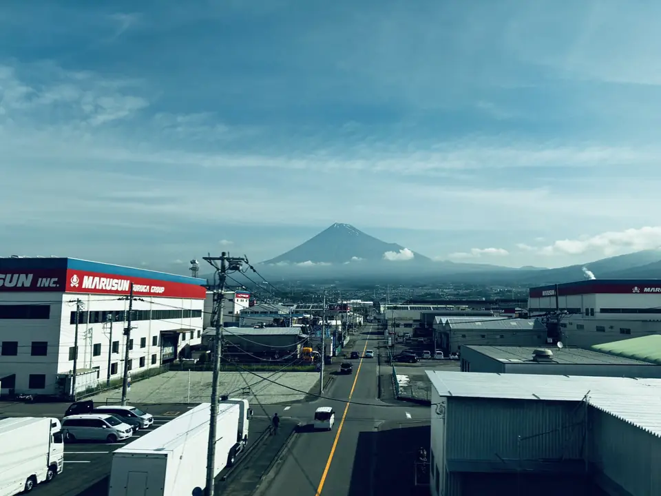

- Section
- Mishima → Shin-Fuji
- Seat side
- Seat E · mountain side
- Timing
- About 43 minutes after leaving Tokyo on a Nozomi train
- Photos
- 5 photos
How does Mt. Fuji change during these three to four minutes?
This page focuses on the classic Mishima–Shin-Fuji stretch, where Mt. Fuji appears largest from the Tokaido Shinkansen. Beyond Mishima, the mountain rises behind towns, factories, and fields, disappears in short tunnels, then returns with a different angle and foreground. Snowy winter, snowless summer, and dusk each turn the same three to four minutes into a different view.
More: Weathernews: Mt. Fuji from the Shinkansen
If you are traveling from Tokyo toward Shin-Osaka, start watching the Seat E · mountain side window as you approach Mishima → Shin-Fuji. If you are traveling toward Tokyo, the order is reversed.
This page focuses on the photographs and scenery between Mishima and Shin-Fuji. For seat booking, timing from Tokyo, Kyoto or Osaka, cloudy-day advice, and Left Fuji, see the Mt. Fuji FAQ and pre-trip guide.
Reading the Mishima–Shin-Fuji view through photos
Near Mishima, Mt. Fuji first appears behind urban scenery and power lines. The appeal is watching it gradually gain presence behind everyday landscapes rather than beginning as an isolated mountain view.
Closer to Shin-Fuji, the foreground opens into fields and lower buildings, making the summit and broad foothills easier to follow. Several tunnels interrupt the view, so its first disappearance is not the end.
While Fuji is in view you will also notice a lower range lying in front of it. That is Mount Ashitaka, a separate volcanic group just south of Fuji. It looks like part of Fuji's skirt but is its own mountain, and along this stretch it overlaps the base of Fuji as though propping up the outline. When you try to trace how far the foothills spread, the seam where Ashitaka ends is the first clue.
The direction of the light is worth knowing too. Mt. Fuji lies north of the tracks, and in Japan the sun tracks across the southern sky, so the mountain is front-lit for essentially the whole day. As long as it is not cloudy, the slopes read clearly in the morning and in the afternoon alike. In the low light of early morning or late afternoon, the ridges and gullies gain shadow and the outline sharpens. As for snow, the first snowcap is usually recorded in late September or October, and by midsummer it has all but vanished — which is why the same stretch of line can show what looks like an entirely different mountain depending on the season.
This page is about the place, photographs, and changing scenery. Seat booking, exact timing from major stations, cloudy-day advice, and Left Fuji are collected separately in the Mt. Fuji FAQ and pre-trip guide.
Location at a glance
Open mapSwitch between the spot and the Shinkansen viewpoint.
How to catch Mt. Fuji
1. Choose the window first
As you approach Mishima → Shin-Fuji, start watching from Seat E · mountain side. Use Live Guide while riding, or the map on this page before you board.
This wider view appears intermittently through the section. Buildings and terrain may block it, so the timing is a guide for when to start looking, not a continuous visibility claim.
2. Highlights
The foreground shifts from city blocks near Mishima to open fields near Shin-Fuji. Keep watching Seat E even after a tunnel hides the mountain; each opening brings it closer and reveals more of its foothills.
Mt. Fuji in photos



 Related
Mt. Fuji over Sagami Plain
Related
Mt. Fuji over Sagami Plain
 Related
Left-Side Fuji
Related
Left-Side Fuji
 Related
Mt. Fuji from Ota
Related
Mt. Fuji from Ota